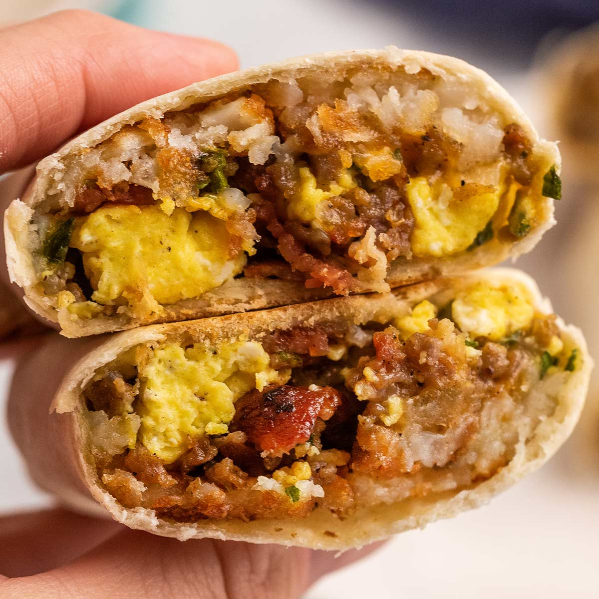

Breakfast Burritos

Description
These burritos of breakfast will explore the region beyond your anus as you moan in abject agony from the porcelain throne.
Ingredients
- Tortillas
- Bacon, sausage, or chorizo (extra pain)
- Eggs
- Cheese
- Potatoes
- Salsa of your choice
- Seasoning of choice (salt and pepper + plus whatever you feel like)
Steps
- Cook the potatoes until they are about halfway done (you can almost stick a fork through them).
- Add the meat to the potatoes until both are nearly cooked and then add the eggs.
- Season meat, egg, and potato mixture to taste.
- Take the mixture off of heat and warm the tortillas.
- Place the mixture on the tortillas and add the cheese/salsa.
- Wrap and get ready for eruption.